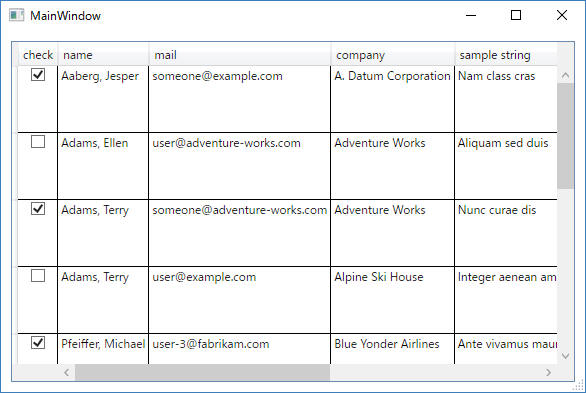
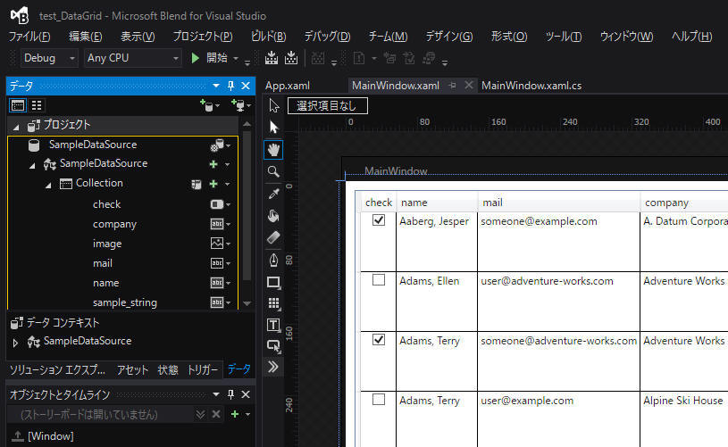

WPF標準の DataGrid コントロールについて記載します。
1. 単純なDataGridの使い方
2. FrozenColumnCount プロパティで表示列を固定する
3. ***
[概要]
まずは単純にDataGridコントロールを使ってみます。
下図のようなアプリケーションを作成してみます。

[環境]
[手順概要]
(1) WPFアプリケーションを新規作成します。
(2) 画面上に”DataGrid”コントロールをドロップ後、位置や大きさを適当に成形します。
(3) 表示するデータを準備します。
ここではBlendの機能を使ってサンプルデータを生成し、これをBlend上でDataGridへドロップしました。

(4) 表示順序 他 を調整します。
[プログラムソース "MainWindow.xaml"]
<Window x:Class="test_01.MainWindow"
xmlns="http://schemas.microsoft.com/winfx/2006/xaml/presentation"
xmlns:x="http://schemas.microsoft.com/winfx/2006/xaml"
xmlns:d="http://schemas.microsoft.com/expression/blend/2008"
xmlns:mc="http://schemas.openxmlformats.org/markup-compatibility/2006"
xmlns:local="clr-namespace:test_01"
mc:Ignorable="d"
Title="MainWindow" Height="400" Width="600" ResizeMode="CanResizeWithGrip" Loaded="Window_Loaded">
<Window.Resources>
<DataTemplate x:Key="imageTemplate">
<StackPanel>
<Image Source="{Binding image}" HorizontalAlignment="Left" Height="64" Width="64"/>
</StackPanel>
</DataTemplate>
</Window.Resources>
<Grid DataContext="{Binding Source={StaticResource SampleDataSource}}">
<DataGrid x:Name="dataGrid" Margin="10" AutoGenerateColumns="False" ItemsSource="{Binding Collection}" CanUserAddRows="False" CanUserDeleteRows="False" CanUserResizeRows="False">
<DataGrid.Columns>
<DataGridCheckBoxColumn Binding="{Binding check}" Header="check"/>
<DataGridTextColumn Binding="{Binding name}" Header="name" IsReadOnly="True"/>
<DataGridTextColumn Binding="{Binding mail}" Header="mail" IsReadOnly="True"/>
<DataGridTextColumn Binding="{Binding company}" Header="company" IsReadOnly="True"/>
<DataGridTextColumn Binding="{Binding sample_string}" Header="sample string" IsReadOnly="True"/>
<DataGridTemplateColumn CellTemplate="{StaticResource imageTemplate}" Header="image" IsReadOnly="True"/>
<DataGridTextColumn Binding="{Binding sample_string}" Header="sample string" IsReadOnly="True"/>
<DataGridTextColumn Binding="{Binding sample_string}" Header="sample string" IsReadOnly="True"/>
</DataGrid.Columns>
</DataGrid>
</Grid>
</Window>
[プログラムソース "MainWindow.xaml.cs"]
using System.Windows;
namespace test_01
{
/// <summary>
/// MainWindow.xaml の相互作用ロジック
/// </summary>
public partial class MainWindow : Window
{
public MainWindow()
{
InitializeComponent();
}
}
}
[プログラムソース "App.xaml"]
<Application
xmlns="http://schemas.microsoft.com/winfx/2006/xaml/presentation"
xmlns:x="http://schemas.microsoft.com/winfx/2006/xaml"
xmlns:local="clr-namespace:test_01"
xmlns:SampleData="clr-namespace:Expression.Blend.SampleData.SampleDataSource" xmlns:d="http://schemas.microsoft.com/expression/blend/2008" xmlns:mc="http://schemas.openxmlformats.org/markup-compatibility/2006" mc:Ignorable="d" x:Class="test_01.App"
StartupUri="MainWindow.xaml">
<Application.Resources>
<SampleData:SampleDataSource x:Key="SampleDataSource" d:IsDataSource="True"/>
</Application.Resources>
</Application>
[プログラムソース "SampleDataSource.xaml.cs"]
<SampleData:SampleDataSource xmlns:SampleData="clr-namespace:Expression.Blend.SampleData.SampleDataSource">
<SampleData:SampleDataSource.Collection>
<SampleData:Item name="Aaberg, Jesper" check="True" mail="someone@example.com" sample_string="Nam class cras" image="SampleDataSource_Files\image01.png" company="A. Datum Corporation"/>
<SampleData:Item name="Adams, Ellen" check="False" mail="user@adventure-works.com" sample_string="Aliquam sed duis" image="SampleDataSource_Files\image02.png" company="Adventure Works"/>
<SampleData:Item name="Adams, Terry" check="True" mail="someone@adventure-works.com" sample_string="Nunc curae dis" image="SampleDataSource_Files\image03.png" company="Adventure Works"/>
<SampleData:Item name="Adams, Terry" check="False" mail="user@example.com" sample_string="Integer aenean amet quisque" image="SampleDataSource_Files\image04.png" company="Alpine Ski House"/>
<SampleData:Item name="Pfeiffer, Michael" check="True" mail="user-3@fabrikam.com" sample_string="Ante vivamus mauris" image="SampleDataSource_Files\image05.png" company="Blue Yonder Airlines"/>
<SampleData:Item name="Philips, Carol" check="False" mail="user-4@fabrikam.com" sample_string="Est arcu hac aliquam" image="SampleDataSource_Files\image01.png" company="City Power & Light"/>
<SampleData:Item name="Poe, Toni" check="True" mail="user-5@fabrikam.com" sample_string="Donec diam" image="SampleDataSource_Files\image02.png" company="Coho Vineyard"/>
<SampleData:Item name="Hicks, Cassie" check="False" mail="user-6@fabrikam.com" sample_string="Nullam etiam eget leo" image="SampleDataSource_Files\image03.png" company="Coho Winery"/>
<SampleData:Item name="Argentiero, Luca" check="True" mail="user-7@fabrikam.com" sample_string="Elit aptent maecenas fusce" image="SampleDataSource_Files\image04.png" company="Coho Vineyard & Winery"/>
<SampleData:Item name="Perry, Brian" check="False" mail="user-8@fabrikam.com" sample_string="Praesent lorem" image="SampleDataSource_Files\image05.png" company="Contoso, Ltd"/>
</SampleData:SampleDataSource.Collection>
</SampleData:SampleDataSource>
[概要]
"FrozenColumnCount" を使って表示列の一部を固定する方法を提示します。
前述のプログラムに一部を変更することで行います。
[環境]
[プログラムソース "MainWindow.xaml.cs"]
namespace test_01
{
/// <summary>
/// MainWindow.xaml の相互作用ロジック
/// </summary>
public partial class MainWindow : Window
{
public MainWindow()
{
InitializeComponent();
}
private void Window_Loaded(object sender, RoutedEventArgs e)
{
// DataGrid の列を一部(2列)固定する
// 詳細は下記URLを参照
// https://msdn.microsoft.com/ja-jp/library/system.windows.controls.datagrid.frozencolumncount(v=vs.110).aspx
dataGrid.FrozenColumnCount = 2;
}
}
}
上記ソースの例では、左側の２列を固定してそれ以外のみを左右スクロールの対象とすることができます。サンプルプログラム ダウンロード
記載： 2017年03月21日 木下英俊